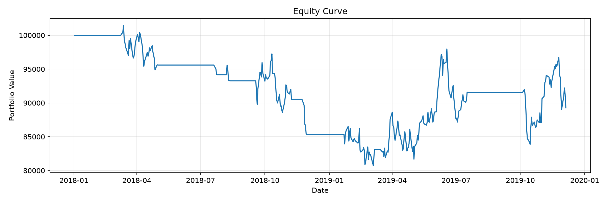
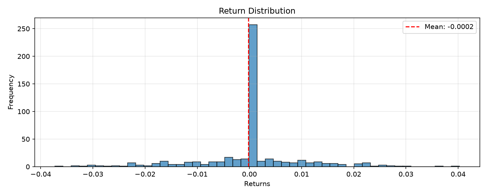

Symbol: SPY
Strategy: sma_crossover
Periods: 503
| Metric | Value |
|---|---|
| Total Return | -10.72% |
| Annualized Return | -5.52% |
| Annualized Volatility | 15.89% |
| Sharpe Ratio | -0.40 |
| Sortino Ratio | -0.54 |
| Calmar Ratio | 0.27 |
| Max Drawdown | -20.44% |
| Omega Ratio | 1.62 |
| Skewness | -0.16 |
| Kurtosis | 2.67 |
| VaR (95%) | -1.84% |
| CVaR (95%) | -2.56% |
| Metric | Value |
|---|---|
| Panel Pricing Mode | net-exposure |
The reported P&L is net_exposure x mean(asset returns), and the costs are charged on the net exposure. A long/short book is not representable by that scalar: see the panel book diagnostic above.
| Regime | Bars |
|---|---|
| unknown | 199 |
| bull_high | 137 |
| sideways_high | 118 |
| bear_high | 18 |
| bull_low | 18 |
| sideways_low | 13 |
| Regime | Obs | Ann. Return | Ann. Vol | Sharpe | Max Drawdown | Win Rate |
|---|---|---|---|---|---|---|
| sideways | 131 | -15.98% | 17.13% | -0.93 | -17.69% | 25.19% |
| bull | 155 | 9.06% | 19.45% | 0.47 | -11.02% | 37.42% |
| Regime | Obs | Ann. Return | Ann. Vol | Sharpe | Max Drawdown | Win Rate |
|---|---|---|---|---|---|---|
| high | 366 | 6.69% | 16.70% | 0.40 | -16.99% | 27.87% |
| low | 73 | -49.27% | 15.54% | -3.17 | -18.24% | 17.81% |
| Regime | Obs | Ann. Return | Ann. Vol | Sharpe | Max Drawdown | Win Rate |
|---|---|---|---|---|---|---|
| sideways_high | 118 | -0.65% | 16.90% | -0.04 | -12.73% | 27.12% |
| bull_high | 137 | 23.75% | 19.01% | 1.25 | -11.02% | 39.42% |
| Regime | Start | End | Length |
|---|---|---|---|
| unknown | 2018-01-02T00:00:00 | 2018-10-05T00:00:00 | 199 |
| bear_high | 2018-10-08T00:00:00 | 2018-10-31T00:00:00 | 18 |
| sideways_high | 2018-11-01T00:00:00 | 2019-03-13T00:00:00 | 95 |
| bull_high | 2019-03-14T00:00:00 | 2019-09-17T00:00:00 | 134 |
| bull_low | 2019-09-18T00:00:00 | 2019-09-26T00:00:00 | 7 |
| sideways_low | 2019-09-27T00:00:00 | 2019-10-15T00:00:00 | 13 |
| sideways_high | 2019-10-16T00:00:00 | 2019-11-15T00:00:00 | 23 |
| bull_high | 2019-11-18T00:00:00 | 2019-11-20T00:00:00 | 3 |
| bull_low | 2019-11-21T00:00:00 | 2019-12-05T00:00:00 | 11 |
| Metric | Value |
|---|---|
| Regime Robustness | fragile |
| Edge Concentrated in One Regime | True |
| Regimes Traded | 2.00 |
| Positive-Sharpe Regimes | 1.00 |
| Negative-Sharpe Regimes | 1.00 |
| Best Regime | bull_high |
| Best Regime Sharpe | 1.25 |
| Worst Regime | sideways_high |
| Worst Regime Sharpe | -0.04 |
| Sharpe Spread (Best - Worst) | 1.29 |
| Dominant Regime (Most Obs) | bull_high |
| Interpretation | The edge is concentrated in a single regime (bull_high); performance is regime-dependent and may not survive a regime change. |
| Metric | Value |
|---|---|
| Total Trades | 8.00 |
| Winning Trades | 2.00 |
| Losing Trades | 6.00 |
| Win Rate | 25.00% |
| Avg Win | 5.88% |
| Avg Loss | 3.19% |
| Profit Factor | 0.63 |
| Expectancy | -0.9210 |
| Trades Closed at End | 1.00 |
| % of Trades Closed at End | 12.50% |
| Metric | Value |
|---|---|
| Probabilistic Sharpe Ratio | 0.2840 |
| P-Value (vs SR*) | 0.7160 |
| Benchmark Sharpe (SR*) | 0.0000 |
| Z-Score | -0.5710 |
| Observations | 503 |
| Skewness | -0.1560 |
| Kurtosis | 5.6695 |
| Metric | Value |
|---|---|
| Test Observations | N/A |
| Parameter Trials | N/A |
| Benchmarks | N/A |
| Sharpe Status | not_applicable |
| Min Detectable Sharpe | N/A |
| Observed Ann. Sharpe | N/A |
| Sharpe Beyond Plausible Bound | False |
| Alpha Status | not_applicable |
| Min Detectable Alpha | N/A |
| Observed Ann. Alpha | N/A |
| Alpha Beyond Plausible Bound | False |
| Realized Ann. Volatility | N/A |
| Interpretation | No significance test was run on this record, so there is no test resolution to report. |
| Field | Value |
|---|---|
| source_path | /home/runner/work/Quantitative-Trading-Skills/Quantitative-Trading-Skills/skills/quantitative-backtesting/assets/example_data/sample_ohlcv.csv |
| load_timestamp | 2026-11-14T13:57:24.857977Z |
| file_format | .csv |
| file_size_bytes | 46812 |
| symbol_filter | SPY |
| start_date_filter | N/A |
| end_date_filter | N/A |
| date_range_original | N/A |
| date_range_final | ('2018-01-01 00:00:00', '2019-12-05 00:00:00') |
| original_shape | (504, 6) |
| final_shape | (504, 5) |
| columns_original | ["date", "open", "high", "low", "close", "volume"] |
| columns_final | ["open", "high", "low", "close", "volume"] |
| validation_passed | true |
| validation_messages | [] |
| transformations_applied | ["column_names_lowercase_stripped", "set_index_from_date", "sorted_index", "coerced_numeric_types"] |
| checksum | 9a66ca5364695907 |
| point_in_time / passed | true |
| point_in_time / violations | [] |
| point_in_time / warnings | [] |
| bias_controls_engaged | true |

